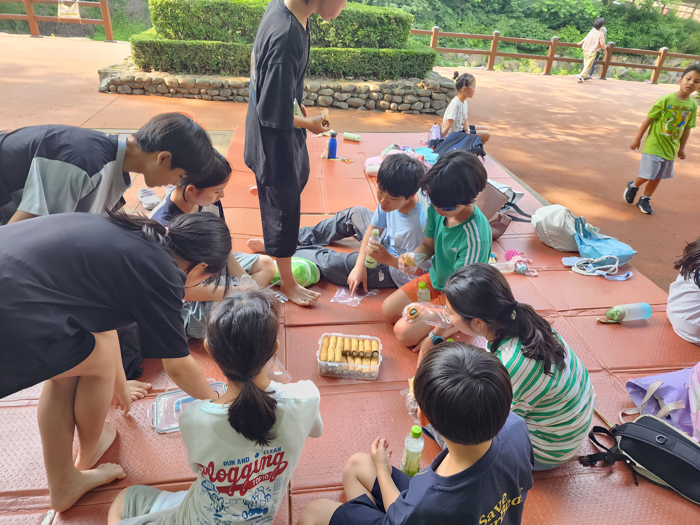
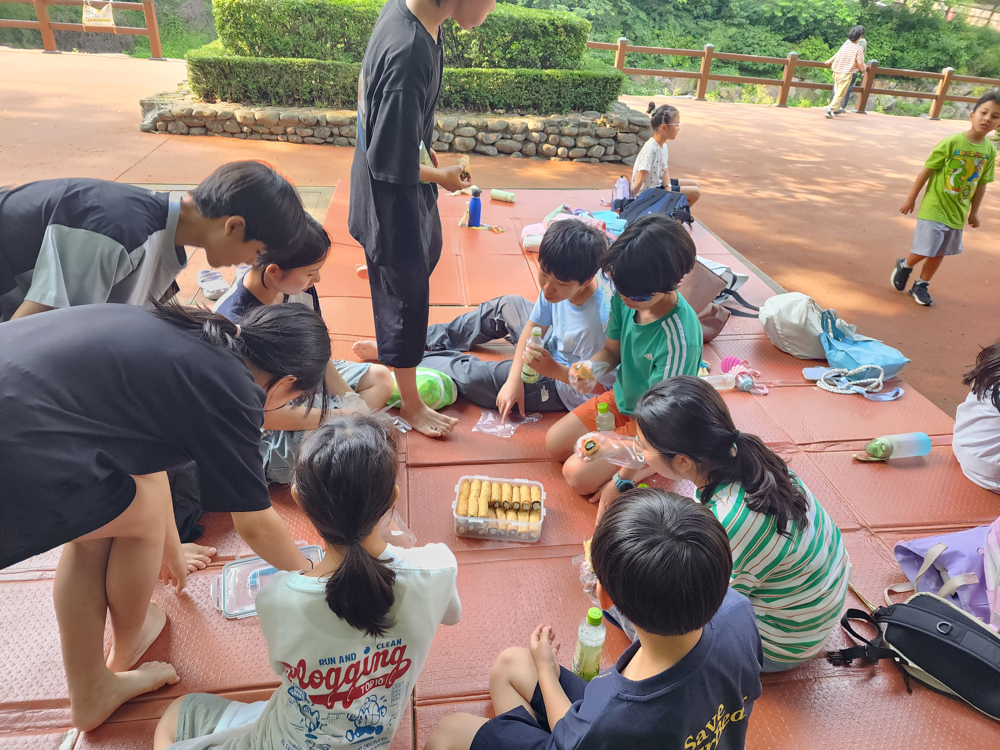

.png)
두근두근 방과후 소식지
2025년 6월호 | 우리 아이들의 특별한 이야기
이사장 인사말
안녕하세요.
5월 스승의 날을 맞아 이사회와 교사회, 그리고 꽃씨까지 함께 모여 과천 시내 칸지고고에서 저녁 식사를 했습니다. 교사회와 꽃씨의 노고에 감사드리며 즐거운 식사를 했고, 방 하나에 옹기종기 모여 앉아 아이들과 교사분들 이야기를 나누는 소중한 시간이었습니다. 아쉽게도 사진은 남기지 못했지만, 하반기에는 꼭 현장의 분위기를 사진으로 공유드릴 수 있도록 할게요!
방모임에서 논의된 것처럼 6월부터 친구 초대의 날, 방학 어린이 모집 등 새로운 시도를 시작하게 됩니다. 이로 인해 교사분들께 새로운 부담을 드릴 수밖에 없는데요, 터전에서 마주치시거나 방모임에서 교사분들을 만나실 때 따뜻한 격려 부탁드립니다. 관련 구체 사항은 다시 공유드리겠습니다.
또한 6월에는 5,6학년 아이들의 첫 경주 여행이 예정되어 있습니다. 3월부터 아이들이 세 팀으로 나누어 총 12회의 회의를 진행했고, 최근엔 식단과 예산안을 정리해 교사회에 전달했다고 합니다. 삼겹살 예산은 8만원인데 된장찌개 예산이 26만원이라 교사회 희한께서 살짝 걱정하셨다는 웃픈 후일담도 전해드립니다. 6월 마지막 주 금토일월 3박 4일간 진행되는 경주 여행, 아이들과 교사 모두 즐겁고 뜻깊은 시간 되도록 조합원 여러분의 많은 관심과 응원 부탁드립니다.
감사합니다.
과천두근두근공동체교육사회적협동조합
이사장 딱지 드림
지난 달 이야기
거의 1년 만에 참여한 아마활동이었습니다. 작년 초에는 과천초 아이들이 꽤 많아서 한 번에 데리고 오려면 힘들었는데, 오늘은 하교지도를 해야 하는 과천초 아이가 두 명밖에 안되어 깜짝 놀랐습니다. 태준이가 조인하여 총 네 명이 오손도손 두근으로 향했습니다. 해솔이가 꺼낸 마이쮸를 하나씩 나눠 먹었지요. 구경해야 할 것도 많고, 나타나는 놀이터마다 들러서 그네도 타야 하고, 가는 길이 한참 멉니다. 두근에 무려 한 시간 만에 도착하니 간식을 먹을 시간이었습니다. 우유와 함께 까나페를 먹고, 아마활동 모집을 하였습니다. 자인이가 나서서 도와주었습니다. 그런데 오늘은 모집이 잘 안되네요. 하지만 활동을 시작하고 나니, 관심을 가지고 아이들이 점점 몰려들었습니다. 시간대를 나누어 하려던 처음의 계획은 무산되고, 하고 싶다고 졸라대면 그냥 마구잡이로 활동을 시작했습니다. 수카드 활동을 아이들이 신기해 하니 뿌듯하고, 속도가 느린 저학년 동생들을 챙기는 친구들이 참 기특하더라고요. [글 : 20기 연재맘 바람]
🧽 두근터전 상반기 대청소 후기
안녕하세요, 시설이사 번개입니다.
지난 5월 24일(토), 조합원분들과 함께한 두근터전 상반기 대청소가 무사히 마무리되었습니다!
창고 정리부터 주방 수리, 야외 텐트 청소와 창문 먼지 제거까지, 각자의 자리에서 땀 흘려 주신 조합원분들께 깊은 감사의 말씀을 전합니다. 특히 하수구 내부까지 정비해주신 분들의 노력 덕분에 아이들이 더 안전하고 쾌적한 환경에서 활동할 수 있게 되었습니다.
작업이 끝난 뒤에는 따뜻한 식사가 마련되어 서로를 격려하는 시간을 가졌습니다 🐼
📝 상반기 대청소를 마치며
- 상반기에 참여해 주신 모든 조합원 여러분, 진심으로 감사드립니다.
- 하반기 대청소는 내부 페인트칠 등 상반기보다 더욱 많은 손길이 필요한 작업이 예상됩니다.
- 상반기에 참여하지 못하신 가정은 하반기에는 꼭 참여해주시기를 부탁드립니다!
- 상·하반기 모두 불참 시에는 페널티 6만 원이 부과됩니다.
함께 힘을 모아 정리한 터전처럼, 두근의 공간이 더욱 생기있고 밝게 유지되길 바라며, 하반기에도 함께하는 마음으로 뵙겠습니다. 💪
2025년 5월 주요 활동
- 전체 나들이(청계산, 과천향교)
- 된장국 끓이기(아리 1-2학년 위주 + 3학년 두근사진관)
- 카레 만들기(칼 연습), 저녁 시간, 영화 상영
- 양말목 공예(주주) – 도어벨 만들기
- 목공(작은눈) – 가면 만들기
- 문원 체육공원 – 문체축구, 문체 마당놀이
- 포로탈출
- 해방시 클럽
- 4학년 서울대공원 캠핑 (1박 2일)
- 5, 6학년 프로젝트 활동 (딸기청 판매, 6월말 경주 예정)
- 감정 사진집
- 책퀴즈 (아리)
🌿 5월 전체나들이 – 청계산 산행 그리고 과천향교와 계곡에서의 하루
5월 첫 나들이는 청계산 산행을 다녀왔습니다. 본격 더위가 찾아오기 전 좋은 날씨에 즐거운 산행길이었습니다.
간만의 산행이어서인지 힘들어하는 우리 아이들. 산행 후 꿀맛 같은 아이스크림을 먹으며 터전 앞 정자에서 잠시 휴식을 취했습니다.
산행 코스정보와 맛있는 아이스크림 간식을 제공해주신 불멍 물멍님께 감사드립니다.🙂
5월 28일 수요일, 두근의 전체 나들이는 과천향교로 향했습니다. 아이들은 가벼운 복장과 간식, 돗자리를 챙겨 들고 설레는 발걸음으로 출발했습니다.
도착하자마자 맑은 계곡물이 반겨주었고, 아이들은 물놀이에 흠뻑 빠졌습니다. 올챙이를 찾아다니고, 서로 물을 튀기며 웃음꽃을 피우는 모습은 그 자체로 여름의 시작을 알리는 풍경이었습니다. 물놀이뿐 아니라 주변 자연을 구경하며 작은 생명들과도 교감하는 시간을 가졌습니다.
즐거운 물놀이 후에는 나무 그늘 아래 돗자리를 펴고 다 함께 간식을 나누었습니다. 정성껏 준비해 온 주먹밥과 간식을 먹으며 친구들과 담소를 나누는 모습에서 따뜻한 공동체의 정을 느낄 수 있었습니다.
이번 나들이는 단순한 체험을 넘어, 자연과 어우러진 하루 속에서 몸과 마음이 한결 가벼워지는 시간이었습니다. 다음 전체 나들이도 벌써 기대가 됩니다!


 

아이들 활동사진


두근두근 책방 도서 기증 안내
두근두근 사부작 책방에서. 도서 기증을 받고자 합니다 ~좀 더 체계적인 기부 방법을 찾다가 두근아이들에게 추천하면 좋을 도서 목록을 정리해보았어요!! 추천도서이니 만큼 각 가정에서도 참고하시면 좋을듯해요 ~^^ 저학년책 위주이고 고학년 도서도 곧 정리해보겠습니다 ~ 추천목록 중 집에 있어서 기부해주실 분들은 따로 저에게 알려주시면 감사하겠습니다!! 두근의 1,2학년 금요일 몰입독서가 활성화 될 수 있도록 많은 관심부탁드릴께요 🙏🏻 [23기 가윤맘 교육이사 양파]
조합원 칼럼
📘 인생의 항아리에 무엇부터 채울 것인가
어느 대학 강의실에서 있었던 일이다. 교수는 학생들에게 전할 메시지를 보여주고자 실험 하나를 준비했다. 탁자 위에는 빈 유리병과 속이 보이지 않는 작은 상자 세 개가 놓여 있었다. 학생들이 강의실에 모이자 교수는 실험을 시작했다. 첫 번째 상자를 연 교수는 골프공을 몇 개 꺼내더니 곧바로 유리병에 넣었다. 그리고 학생들에게 물었다. "이제 유리병이 가득 찼나요?" 학생들은 그렇다고 대답했다.
교수는 두 번째 상자를 열더니 알록달록한 초코볼을 몇 개 꺼낸 뒤 다시 유리병에 넣었다. 그러고서 유리병을 이리저리 흔들자 골프공 사이로 초코볼이 이리저리 굴러가는 모습이 보였다. 교수가 다시 물었다. "유리병이 꽉 차 있나요?" 학생들은 이번에도 그렇다고 말했다.
이제 세 번째 상자가 남았다. 교수는 상자를 열어 그 안에 담겨 있던 모래를 골프공과 초코볼이 든 잼 유리병에 넣었다. 그러자 예상했던 일이 벌어졌다. 모래는 병 속으로 들어가자마자 다른 물체 사이의 빈틈을 빠짐없이 채웠다. 교수는 다시 학생들에게 유리병이 가득 찬 상태인지 물었고, 이번에도 그렇다는 답이 돌아왔다.
그 순간 교수는 가방에서 캔 맥주 두 개를 꺼내더니 유리병에 맥주를 쏟아부었다. 그러자 모래 틈에 있던 마지막 빈자리가 모두 채워졌다. 강의실에서 한바탕 웃음소리가 터져 나왔다. 교수는 학생들에게 말했다. "이 유리병에 여러분의 인생이라고 상상해보세요." 학생들이 놀라는 동안 교수는 말을 이어갔다. "골프공은 가족, 부모, 친구, 자녀 등 인생에서 중요한 것들을 상징합니다. 알록달록한 초코볼은 직장, 집, 자동차를, 모래는 우리 삶에서 만나는 온갖 소소한 것을 상징하지요. 중요한 것은 무엇을 가장 먼저 유리병에 넣는가입니다. 모래를 먼저 넣어버리면 초코볼이나 골프공이 들어갈 자리가 없을 겁니다. 이제 여러분에게는 이 원리를 자기 삶에 비추어 올바른 결론을 내려야 하는 중요한 과제가 주어졌습니다."
그러자 학생 한 명이 손을 들어 질문했다. "그런데 맥주가 뜻하는 건 뭔가요?" 교수는 살짝 미소짓더니 이렇게 답했다. "맥주는 꽉 차 보이는 삶일지라도 뭔가를 즐길 만한 여유가 없다는 것은 아니라는 사실을 보여주는 거였어요."
이 글을 읽고 나니 일상에서 정말 중요한 것이 무엇인지 늘 먼저 생각하고 그것부터 채워야 한다는 것을 새삼 일깨워 줍니다. 삶이 아무리 바쁘고 가득 차 보여도, 무언가 즐길 수 있는 여유와 즐거움을 위한 작은 공간은 늘 남겨둘 수 있다는 점을 잊지마시기 바랍니다. [19기 대연빠 바스켓]
📢 지역 소식 안내
과천에서 진행되는 두 가지 문화행사를 소개합니다. 조합원 여러분의 많은 관심과 참여 부탁드립니다!
🎉 꼬꼬무 생활문화축제
일시: 2025년 6월 14일(토) 10:00 ~ 16:00
장소: 문원체육공원 일대
내용: 동아리·동호회 공연과 다양한 생활문화 체험 부스 운영
두근두근 밴드도 공연에 참여합니다! 버스킹 시간: 11:10
체험비: 부스별 500원 (본부에서 티켓 구매 후 사용)
🎶 우리가족 하모니
일시: 2025년 6월 28일(토) 13:00 ~ 17:00
대상: 과천 거주 3~5인 가족 (초등 청소년 포함)
내용: 가족 레크리에이션, 노래자랑, 음악놀이
모집기간: 5월 30일(금) ~ 6월 4일(수)
참가비: 가족당 35,000원 (간단한 간식 제공)
📅 다음 달 미리보기
다가오는 6월, 두근에서는 더욱 다채로운 활동이 기다리고 있어요!
함께 준비하고 기대해 주세요 😊
- 🎨 픽사 전시회 관람 (아리)
- 🌱 EM 흑공 만들기
- 💎 바다유리 목걸이 만들기
- 🧘 안마봉 만들기 체험
- 🚌 5,6학년 경주 프로젝트 첫 여행
- 🏓 탁구대회 참가 (예상 일정: 6월 22일)
- 🏛 역사탐방 (서대문 형무소 – 6월 14일 토요일 예정)